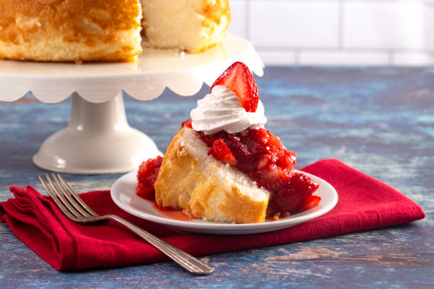

Description
Originated in the XIX century America,
"angel food" is a sponge cake made out of egg whites and sugar.
It is popular to this day for its texture and low-fat content.
Ingredients
- 8 egg whites
- 1 tsp cream of tartar
- 1 cup sugar
- 3/4 cup cake flour
- 1/4 tsp salt
- 3/4 tsp vanilla
Though it is recommended to use cake flour,
all-purpose flour can be used instead.
Steps
- Preheat the oven to 350°F (175°C).
Set a rack in the lower third of the oven.
- Sift the flour mixed with salt 4 times.
- Beat the egg whites until foamy. After, add the cream of tartar and beat on a
higher speed until medium peaks.
- Slowly beat all of the sugar into the eggs.
- Add the flour. Notice that the flour has to
be gently folded in rather that beat.
- Fold in the vanilla.
- Gently add the batter into an ungreased cake pan.
- Bake for 45—50 minutes.
- After the cake if done, let it cool for about 3 hours.
It's important to be gentle when making a sponge cake —
if the batter is overmixed, the air will be knocked
out of the egg whites, the resulting cake will be flat and dense.
The pan has to be ungreased to allow the batter to climb up the sides as it cooks.
Garnish the cake with berries, fruit, or powdered sugar.